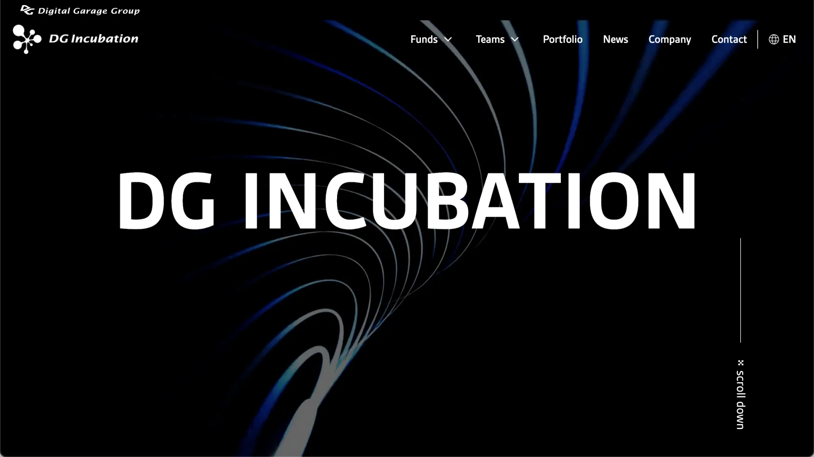
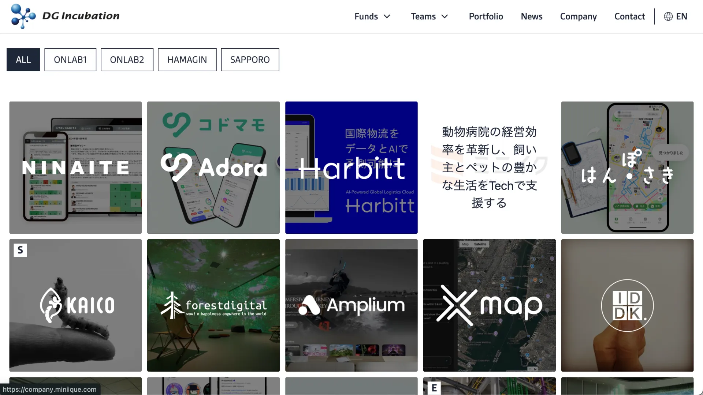
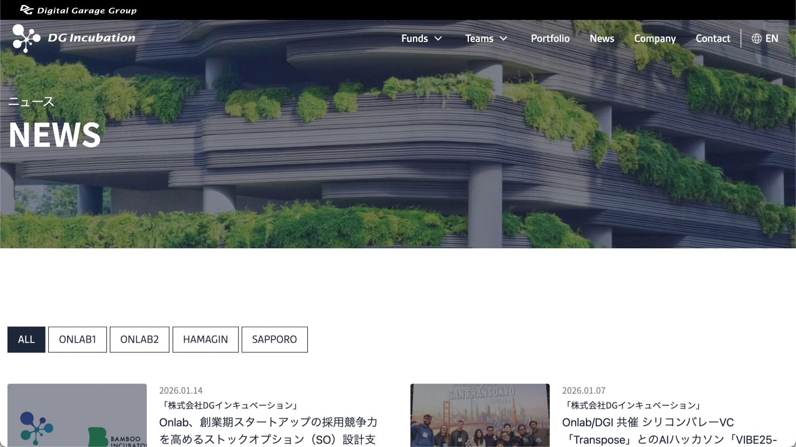

DG Incubation
サイトリニューアル — UXアーキテクチャ & WordPress構築
DG Incubationは、Digital Garageのインキュベーション・ファンド管理部門です。既存サイトは日本語のみのシングルページで、CMSも英語版もなし。依頼はシンプルでした：リニューアルしてほしい。正式なブリーフなし、ミーティングと旧サイトの確認だけ。ゼロから作り直しました。
背景
DG Incubationは、Digital Garageのインキュベーション・ファンド管理部門です。既存サイトは日本語のみのシングルランディングページ——紺色の背景にテキストが詰め込まれた、ファンド構造の図が中心の作り。CMSもなく、ナビゲーションもなく、英語版もありませんでした。依頼はリニューアル——正式なブリーフなし、チームに旧サイトを見せてもらい、新しくしてほしいと告げられるだけのミーティングから始まりました。
方向性
インキュベーション企業のウェブサイトには一つの仕事があります：起業家と投資家に信頼性を示すこと。クリーンなホワイトをベースに、コーポレートブルーをアクセントカラーとして採用しました——控えめで、プロフェッショナルで、長持ちするデザイン。暗い背景も重いグラデーションもなく、2年後に古くなる要素を一切排除しました。ビジュアルシステムは意図的に静かで、コンテンツが本来の仕事をできるようにしています。
ヒーローには、スタティックになりがちなコーポレートページにエネルギーを加えるため、ソーシングした動画を使用しています。他の要素はすべて邪魔をしません。
主な判断
旧サイトと必要なものとのギャップは大きく、4つの判断がリビルド全体を形づくりました。
01. LPからマルチページサイトへ 旧サイトはAbout・ファンド構造・会社概要のすべてを1ページに詰め込み、セクション間のナビゲーションもありませんでした。ファンドを調べている起業家と、ポートフォリオを確認する投資家では、ニーズが違います。各ファンド・ポートフォリオ・ニュース・チーム・会社概要の専用ページに分割することで、すべてのオーディエンスに明確な経路を提供しました。
02. 最初からバイリンガルで 旧サイトは日本語のみ。DG Incubationはグローバルなスタートアップへの投資と、国際的なパートナーとの協働を行っています。英語版は選択肢ではなく、むしろ遅すぎるほどでした。Polylangを使って構築し、JPとENの両言語が同じ構造を共有しながら、コードに触れることなく独立して管理できるようにしました。
03. ノンデザイナーのためのCMS チームがニュース・チームメンバー・ポートフォリオのエントリーを自分たちで更新できる必要がありました。ACFを使ったカスタムWordPressテーマを構築——各コンテンツエリアにカスタム投稿タイプと構造化フィールドグループを設けました。ニュース記事や新しいチームメンバーを追加するのにデザインの知識は不要です。開発者に頼ることなく、サイトを常に最新の状態に保てます。
04. ポートフォリオページのリファレンス ブリーフではDG Venturesのポートフォリオデザインを参照するよう求められていました。フィルタリング可能なグリッド構造を踏襲し、各企業のエントリーに何をしているかを一行で説明するタグラインを追加しました。タグラインにより、訪問者がクリックしなくても関連性を判断できるようになりました。
デザイン
ビジュアルシステムは意図的に静かです。ホワイトの背景、ブルーのアクセント、クリーンなサンセリフタイポグラフィ。コンテンツから注目を奪うものは何もありません。各ファンドページは同じシステムの中で独自のアイデンティティを持ち——一貫したレイアウトでありながら、それぞれが独立したプロダクトとして感じられるよう差別化されています。ホームページのビデオヒーローはギミックなしのモーション：サイレントで背景を流れ、ページに動きを与えながら、上のテキストと競合しません。
今日同様、5年後も適切に見えるサイトを目指しました。
開発
ACFを使ったカスタムWordPressテーマ。ニュース・チーム・ポートフォリオの3つのカスタム投稿タイプ——各コンテンツエリアに構造化フィールドグループを設けることで、チームがコードに触れずにコンテンツを更新できます。Polylangを使って全体をバイリンガルに——JPとENが同じテンプレートを共有しながら、別々のコンテンツツリーを持ちます。フロントエンドは標準的なHTML、CSS、バニラJS——不要なフレームワークを使用しません。
成果
日本語のみのシングルページ資料から、チームが自分たちで管理できるバイリンガルのマルチページWordPressサイトへ。ライブ状態を保ち、長期運用に耐えるように構築されています。コンテンツ構造はスケーラブルで、リデザインなしに新しいファンド・チームメンバー・ポートフォリオエントリーを追加できます。
振り返り
旧サイトのファンド構造図は重要な情報を持っていました——異なる投資ステージを横断して各ファンドがどう関連するかを示していたのです。リデザインで視覚的に重いと感じて削除しましたが、代わりに何も追加しませんでした。振り返ってみれば、丸ごとカットするのではなく、その構造をよりクリーンに表現する方法を見つけるべきでした。残す価値のある複雑さがありました。

